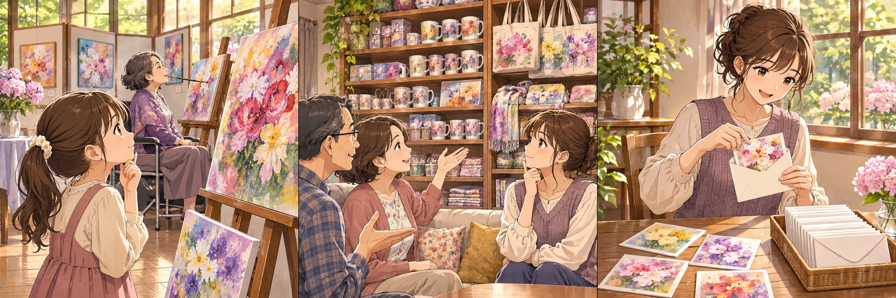
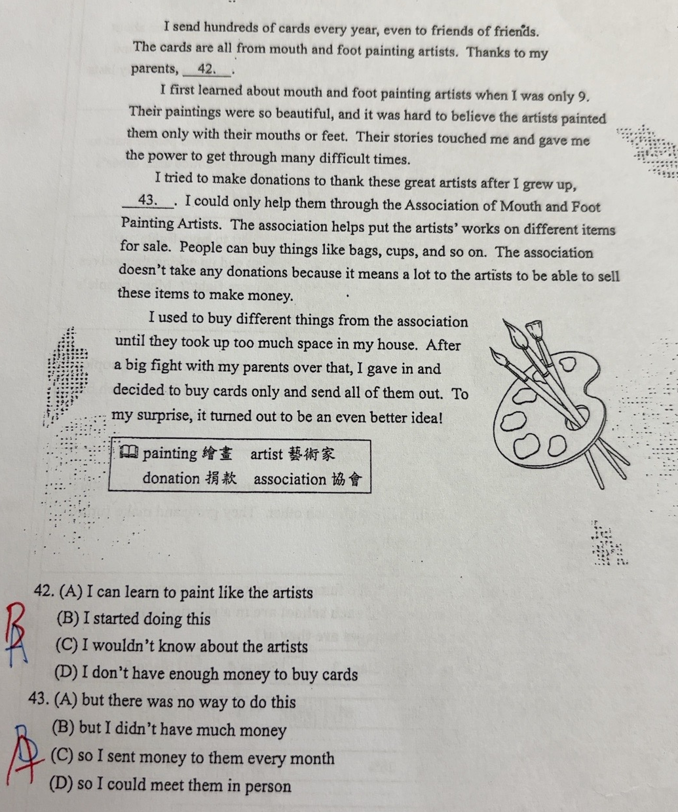
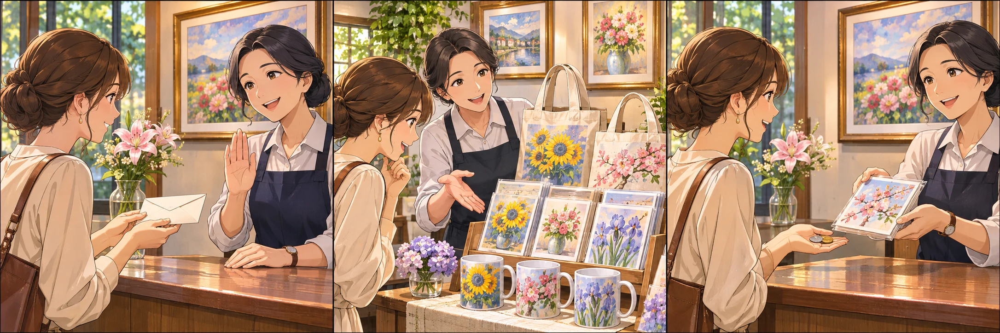

完整原題
作答所需文章／材料
I send hundreds of cards every year, even to friends of friends. The cards are all from mouth and foot painting artists. Thanks to my parents, __42__. I first learned about mouth and foot painting artists when I was only 9. Their paintings were so beautiful, and it was hard to believe the artists painted them only with their mouths or feet. Their stories touched me and gave me the power to get through many difficult times. I tried to make donations to thank these great artists after I grew up, __43__. I could only help them through the Association of Mouth and Foot Painting Artists. The association helps put the artists’ works on different items for sale. People can buy things like bags, cups, and so on. The association doesn’t take any donations because it means a lot to the artists to be able to sell these items to make money. I used to buy different things from the association until they took up too much space in my house. After a big fight with my parents over that, I gave in and decided to buy cards only and send all of them out. To my surprise, it turned out to be an even better idea! 原卷字詞提示：painting 繪畫；artist 藝術家；donation 捐款；association 協會。英文第42題｜寄卡片習慣的由來
英文第43題｜支持藝術家的方式
先想一想，再查看答案、解說與原圖
英文第42題｜寄卡片習慣的由來
分享原卷｜第42題 · 首次出題日期 2026-11-02 · 原AI對話 ↗
逐項解析
| 選項與原句 | 判讀 | 句意與判斷理由 |
|---|---|---|
| (A) I can learn to paint like the artists | 不選 | 作者沒有說學習口足繪畫；前後文談的是購買與寄送卡片。 |
| (B) I started doing this | 應選 | 表示「我開始做這件事」；this指購買並寄送卡片，對應最後一段父母促成的改變。 |
| (C) I wouldn’t know about the artists | 不選 | 表示「我就不會知道這些藝術家」；和文章已知畫家、父母促成新做法的脈絡不合。 |
| (D) I don’t have enough money to buy cards | 不選 | 表示「我沒有足夠的錢買卡片」；文章沒有缺錢線索，反而說作者每年寄出數百張卡片。 |
詳細說明與解題步驟
第42空接在Thanks to my parents之後。前兩句先說作者每年寄出數百張口足畫家卡片，最後一段再交代原因：作者原本購買許多協會商品，因東西太占空間而與父母爭執，最後讓步，改成只買卡片並全部寄出去。父母促使作者開始「買卡片並寄出」的做法，因此選B：I started doing this。
this指向前文寄卡片的習慣，並由最後一段的decided to buy cards only and send all of them out補足背景。Thanks to my parents在這裡承接這件事的由來，不是說父母教作者畫畫，也不是說作者沒有買卡片的錢。
C的wouldn't know表示「就不會知道」，既不符合全文已認識畫家的事實，也無法接出父母促成寄卡片習慣的因果。D的沒錢沒有文章證據。

① 先確認this指的是什麼
開頭說作者每年寄出數百張口足畫家卡片。第42空的this，指前面「買卡片並寄出」的做法，不是學畫畫。
② 父母促使作者改變習慣
最後一段交代：商品占了太多家中空間，作者與父母爭執後讓步，決定只買卡片並寄出去。這才是習慣改變的原因。
③ 把原因接回第42空
Thanks to my parents是「多虧我的父母」。接「我開始這麼做」，就能把父母的影響和寄卡片的新習慣連起來。
④ 前文的this，找後文原因
答案 B：I started doing this
- this＝購買並寄出卡片的做法。
- 起因在最後一段：家中商品太占空間。
- 不是父母教作者畫畫，也不是沒有錢買卡片。
核對註記：已實看真正使用者上傳的原卷及裁切成品，核對完整題幹、四個選項與必要閱讀文；冊次及教材章節無證據，歸綜合。日期取首次提問訊息的台灣日期，非實際考試日期。
原圖（僅本題）

英文第43題｜支持藝術家的方式
分享原卷｜第43題 · 首次出題日期 2026-11-02 · 原AI對話 ↗
逐項解析
| 選項與原句 | 判讀 | 句意與判斷理由 |
|---|---|---|
| (A) but there was no way to do this | 應選 | 「但是沒有辦法這麼做」的this指直接捐款，符合協會不收捐款及後文購買商品的限制。 |
| (B) but I didn’t have much money | 不選 | 「但是我沒有很多錢」；文章沒有說作者缺錢，限制在協會不收捐款。 |
| (C) so I sent money to them every month | 不選 | 「所以我每月寄錢給他們」；和協會不接受捐款的說明不合，也沒有每月寄錢的資訊。 |
| (D) so I could meet them in person | 不選 | 「所以我可以親自見到他們」；文章沒有提到見面的目的，無法連接後文的購物支持。 |
詳細說明與解題步驟
第43空前說作者長大後試著捐款感謝藝術家，空格後卻說只能透過口足畫家協會幫助他們。後面進一步解釋協會不接受捐款，而是將作品製成商品販售，讓藝術家靠銷售賺錢。作者想直接捐款卻做不到，前後是轉折，所以選A：but there was no way to do this。
這裡的this指前面的make donations（捐款），和第42題this所指的寄卡片做法不同。作者後來改用購買商品支持藝術家，不是完全沒有任何支持方式；「沒有辦法」限於此處想直接捐款的做法。
B雖也用but，卻把原因換成缺錢，文章沒有這個訊息。C說每月寄錢，與不接受捐款的說明不合。D說親自見藝術家，文中未提到這個目的。

① 想捐款，卻沒辦法這麼做
第43空前說作者想捐款感謝畫家，後面卻說只能透過協會幫助。這個轉折的限制，接著由文章說明。
② 原因是協會不收捐款
協會把畫作製成商品販售，不接受直接捐款。讓藝術家靠作品銷售賺錢很有意義，並不是作者沒有錢。
③ 可以改用購買商品支持
there was no way to do this的this，指前面的「直接捐款」。仍能購買商品支持，不是完全沒有任何幫助的方法。
④ 想捐款卻受限，改用購買支持
答案 A：but there was no way to do this
- but連接「想捐款」與「無法直接捐款」的轉折。
- 第43空的this＝捐款；和第42空的指代不同。
- 後文證據：協會不接受捐款，改以銷售作品商品支持。
核對註記：已實看真正使用者上傳的原卷及裁切成品，核對完整題幹、四個選項與必要閱讀文；冊次及教材章節無證據，歸綜合。日期取首次提問訊息的台灣日期，非實際考試日期。